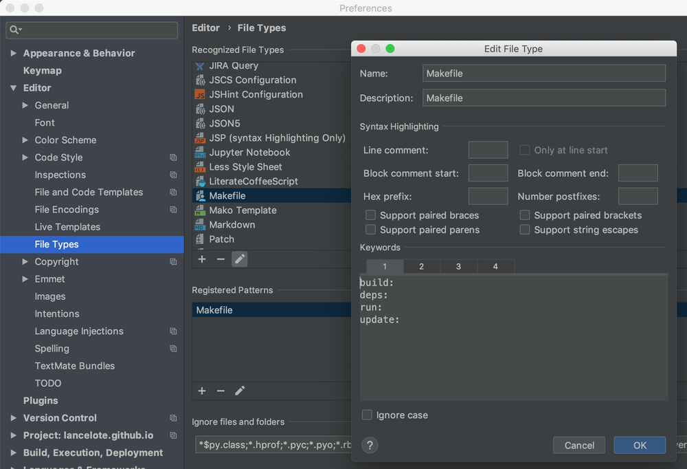

Custom Language Highlighting in PyCharm
It is a quite common request to support new programming and config languages in PyCharm. While some of them like (e.g. Markdown, JavaScript) are supported from the box and for some (e.g. Makefile) you can install a third party plugin, others have no support at all at the moment. Of course, you can write a new plugin by yourself, but it is too time consuming in many cases, so I present you a different approach, a bit harsh and not so feature-rich but quite useful in many cases (I use it myself) - Custom File Types.
Starting Point
For a basic example I will use Makefile. You can install a custom plugin for it called Makefile support, it provides an interesting features like running targets with gutter icons, but I really need just a bare visual guide to be able to quickly navigate the file structure on the first glance so I stick with a custom type. You can apply my instruction to any syntax you want (e.g. say hello to Ruby in PyCharm).
Before we start, here are the official docs on the topic: New File Type.
Custom Syntax Rules
To add a new custom file type go directly to Settings | Editor | File Types and press + under Recognized File Types to add a new one. We will name it Makefile.
{kind=link}
There are multiple options you can define here. The most interesting for us are keywords. There are 4 blocks for keywords, each one has a dedicated color you can change, so it is important to split all the things you want highlighting for into four block. I will use only two for:
- target names
- important command
I use Makefile in many of my projects for automation purposes so there is a "standard" pool of targets I use everywhere, for the simple case lets stick with:
build: deps: run: update:
For important commands I want to see: python, nikola and pur. nikola is a Python-based static site generator powering this blog, and pur is a dry simple utility to update project requirements.
python nikola pur
As the last step we have to define a pattern for file matching so PyCharm will understand to which files apply this new custom file type. In our case it is simply Makefile but you can use a more sophisticated alternative with * and ? wildcards.
Feel free to also define a line comment symbol (e.g. #) and play with other settings here.
Custom Colors
Now to the colors. There is a special section Settings | Editor | Color Scheme | Custom for users to define a color scheme for their file types. Feel free to change a keyword group color here if you want it to be a different one. You can also add an effect for it, e.g. underscore.
{kind=link}
Result and Resume
Let's see the result:
{kind=link}
Probably not the most beautiful syntax highlighting I ever saw but it works good enough - I can quickly spot where each target is and where each command starts. You can go further of course.
So that was it. This is probably the most simple way to add a new syntax highlighting to PyCharm or any other JetBrains IDE, it will not provide you a lot of features (no error highlighting), but for a thing you can do in few minutes it is quite nice:
- native support without any third party plugins
- completion for registered keywords
- basic highlighting
- some minor goodies like commenting the code with a dedicated shortcut if you did define a comment sign
- speed
It is not the only way to add support for a new language in PyCharm, but that is another story.
Hope it was helpful, see you next time.
Comments
Comments powered by Disqus